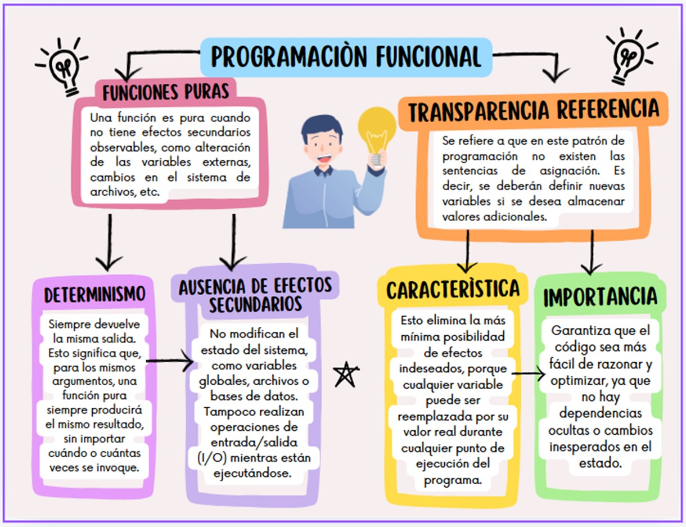

CONCEPTOS BÁSICOS La programación funcional es un estilo de programación que hace hincapié en el uso de funciones y datos inmutables.  Lenguajes que soportan programación funcional Haskell Este es un lenguaje puro de programación funcional, que utiliza para ello el cálculo Lambda. ML Se utiliza en aplicaciones matemáticas, científicas, financieras, analíticas y de otros tipos. Una de sus fortalezas es hacer software para manejar otros programas. Erlang Es altamente escalable y concurrente, haciéndolo ideal para las telecomunicaciones y otras aplicaciones que reciben cantidades masivas de datos en un orden impredecible. CONCEPTOS DESCRIPCIÓN Funciones impuras Lo impuro funciona exactamente en lo opuesto a lo puro. Tienen entradas o salidas ocultas; se llama impuro. Las funciones impuras no se pueden utilizar ni probar de forma aislada ya que tienen dependencias. Recursividad La recursión se implementa utilizando funciones recursivas, que se llaman a sí mismas de forma repetitiva hasta alcanzar el caso base. Inmutabilidad Las variables son inmutables, es decir, no es posible modificar una variable una vez que se ha inicializado. Aunque se puede crear una nueva variable, no se permiten modificar las variables existentes. Funciones de Orden Superior Son funciones que aceptan otras funciones como parámetros o devuelven funciones como resultado. Esto permite que las funciones sean tratadas como valores y manipularlas para construir abstracciones potentes. Composición de Funciones La composición de funciones es el proceso de combinar dos o más funciones en una nueva función. El resultado de una función se pasa como entrada a la siguiente. Composición de Funciones Un efecto secundario ocurre cuando una función altera el estado del programa o interactúa con el entorno externo (como modificar variables globales, escribir en un archivo, o imprimir en consola). En la programación funcional, se evita este tipo de efectos secundarios.